Ingest gridded products such as ice velocity into OGGM#
After running our OGGM experiments we often want to compare the model output to other gridded observations, or maybe we want to use additional data sets that are not currently in the OGGM shop to calibrate parameters in the model (e.g. Glen A creep parameter, sliding parameter or the calving constant of proportionality). If you are looking on ways or ideas on how to do this, you are in the right tutorial!
In OGGM, a local map projection is defined for each glacier entity in the RGI inventory following the methods described in Maussion and others (2019). The model uses a Transverse Mercator projection centred on the glacier. A lot of data sets, especially those from Polar regions can have a different projections and if we are not careful, we would be making mistakes when we compare them with our model output or when we use such data sets to constrain our model experiments.
New in OGGM 1.6! We now offer preprocess directories where the data is available already. Visit OGGM as an accelerator for modelling and machine learning for more info.
First lets import the modules we need:
import xarray as xr
import numpy as np
import matplotlib.pyplot as plt
import salem
from oggm import cfg, utils, workflow, tasks, graphics
cfg.initialize(logging_level='WARNING')
2026-03-09 23:15:58: oggm.cfg: Reading default parameters from the OGGM `params.cfg` configuration file.
2026-03-09 23:15:58: oggm.cfg: Multiprocessing switched OFF according to the parameter file.
2026-03-09 23:15:58: oggm.cfg: Multiprocessing: using all available processors (N=4)
cfg.PATHS['working_dir'] = utils.gettempdir(dirname='OGGM-shop-on-Flowlines', reset=True)
Let’s define the glaciers for the run#
rgi_ids = ['RGI60-14.06794'] # Baltoro
# The RGI version to use
# Size of the map around the glacier.
prepro_border = 80
# Degree of processing level. This is OGGM specific and for the shop 1 is the one you want
from_prepro_level = 3
# URL of the preprocessed gdirs
# we use elevation bands flowlines here
base_url = 'https://cluster.klima.uni-bremen.de/~oggm/gdirs/oggm_v1.6/L3-L5_files/2025.6/elev_bands/W5E5/per_glacier'
gdirs = workflow.init_glacier_directories(rgi_ids,
from_prepro_level=from_prepro_level,
prepro_base_url=base_url,
prepro_border=prepro_border)
2026-03-09 23:15:59: oggm.workflow: init_glacier_directories from prepro level 3 on 1 glaciers.
2026-03-09 23:15:59: oggm.workflow: Execute entity tasks [gdir_from_prepro] on 1 glaciers
gdir = gdirs[0]
graphics.plot_googlemap(gdir, figsize=(8, 7))
# You have to manually add an API KEY. If you run it on jupyter hub or binder, we do that for you.
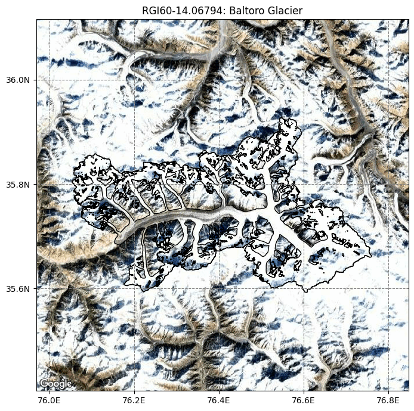
The gridded_data file in the glacier directory#
A lot of the data that the model use and produce for a glacier is stored under the glaciers directories in a NetCDF file called gridded_data:
fpath = gdir.get_filepath('gridded_data')
fpath
'/tmp/OGGM/OGGM-shop-on-Flowlines/per_glacier/RGI60-14/RGI60-14.06/RGI60-14.06794/gridded_data.nc'
with xr.open_dataset(fpath) as ds:
ds = ds.load()
ds
<xarray.Dataset> Size: 2MB
Dimensions: (y: 348, x: 481)
Coordinates:
* y (y) float32 1kB 3.993e+06 3.993e+06 ... 3.924e+06 3.924e+06
* x (x) float32 2kB 5.793e+05 5.795e+05 ... 6.751e+05 6.753e+05
Data variables:
topo (y, x) float32 670kB 4.863e+03 4.882e+03 ... 5.384e+03
topo_smoothed (y, x) float32 670kB 4.869e+03 4.881e+03 ... 5.386e+03
topo_valid_mask (y, x) int8 167kB 1 1 1 1 1 1 1 1 1 1 ... 1 1 1 1 1 1 1 1 1
glacier_mask (y, x) int8 167kB 0 0 0 0 0 0 0 0 0 0 ... 0 0 0 0 0 0 0 0 0
glacier_ext (y, x) int8 167kB 0 0 0 0 0 0 0 0 0 0 ... 0 0 0 0 0 0 0 0 0
Attributes:
author: OGGM
author_info: Open Global Glacier Model
pyproj_srs: +proj=utm +zone=43 +datum=WGS84 +units=m +no_defs
max_h_dem: 8528.734
min_h_dem: 2992.6685
max_h_glacier: 8528.734
min_h_glacier: 3402.391cmap=salem.get_cmap('topo')
ds.topo.plot(figsize=(7, 4), cmap=cmap);
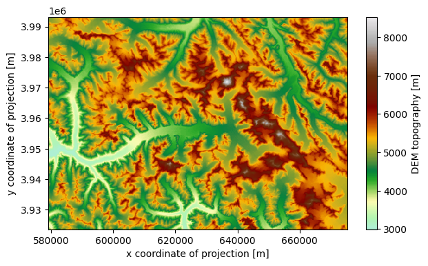
ds.glacier_mask.plot();
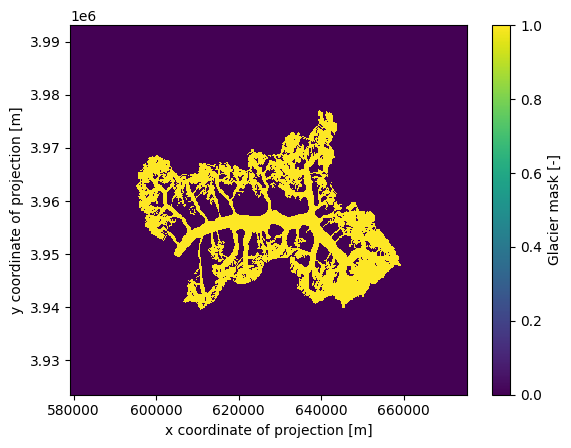
Merging the gridded_data files of multiple glacier directories#
It is also possible to merge the gridded_data files of multiple glacier directories. Let’s try it with two glaciers:
rgi_ids_for_merge = ['RGI60-14.06794', # Baltoro
'RGI60-14.07524', # Siachen
]
gdirs_for_merge = workflow.init_glacier_directories(rgi_ids_for_merge,
from_prepro_level=from_prepro_level,
prepro_base_url=base_url,
prepro_border=prepro_border)
2026-03-09 23:16:04: oggm.workflow: init_glacier_directories from prepro level 3 on 2 glaciers.
2026-03-09 23:16:04: oggm.workflow: Execute entity tasks [gdir_from_prepro] on 2 glaciers
ds_merged = workflow.merge_gridded_data(
gdirs_for_merge,
output_folder=None, # by default the final file is saved at cfg.PATHS['working_dir']
output_filename='gridded_data_merged', # the default file is saved as gridded_data_merged.nc
included_variables='all', # you also can provide a list of variables here
add_topography=False, # here we can add topography for the new extent
reset=False, # set to True if you want to overwrite an already existing file (for playing around)
)
2026-03-09 23:16:05: oggm.workflow: Applying global task merge_gridded_data on 2 glaciers
2026-03-09 23:16:05: oggm.workflow: Execute entity tasks [reproject_gridded_data_variable_to_grid] on 2 glaciers
2026-03-09 23:16:05: oggm.workflow: Execute entity tasks [reproject_gridded_data_variable_to_grid] on 2 glaciers
ds_merged
<xarray.Dataset> Size: 3MB
Dimensions: (y: 577, x: 746)
Coordinates:
* y (y) float32 2kB 3.993e+06 3.993e+06 ... 3.878e+06 3.878e+06
* x (x) float32 3kB 5.792e+05 5.794e+05 ... 7.28e+05 7.282e+05
Data variables:
glacier_mask (y, x) float32 2MB 0.0 0.0 0.0 0.0 0.0 ... 0.0 0.0 0.0 0.0 0.0
glacier_ext (y, x) float32 2MB 0.0 0.0 0.0 0.0 0.0 ... 0.0 0.0 0.0 0.0 0.0
Attributes:
author: OGGM
author_info: Open Global Glacier Model
pyproj_srs: +proj=utm +zone=43 +datum=WGS84 +units=m +no_defs
nr_of_merged_glaciers: 2
rgi_ids: ['RGI60-14.06794', 'RGI60-14.07524']ds_merged.glacier_mask.plot()
<matplotlib.collections.QuadMesh at 0x7f7c09153890>
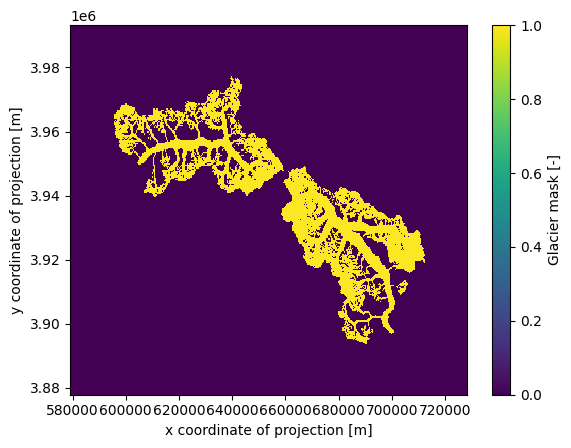
As you can see, topography is not included because this process requires some time. The reason is that topography is not simply reprojected from the existing gridded_data; instead, it is redownloaded from the source and processed for the new ‘merged extent’. You can include topography by setting add_topography=True or specifying the DEM source add_topography='dem_source'.
There are additional options available, such as use_glacier_mask or preserve_totals (for preserving the total volume when merging distributed thickness data). For a more comprehensive explanation of these options, refer to the Docstring (by uncommenting the line below).
# for more available options uncomment the following line
# workflow.merge_gridded_data?
Add data from OGGM-Shop: bed topography data#
Additionally, to the data produced by the model, the OGGM-Shop counts with routines that will automatically download and reproject other useful data sets into the glacier projection (For more information also check out this notebook). This data will be stored under the file described above.
OGGM can now download data from the Farinotti et al., (2019) consensus estimate and reproject it to the glacier directories map:
from oggm.shop import bedtopo
workflow.execute_entity_task(bedtopo.add_consensus_thickness, gdirs);
2026-03-09 23:16:05: oggm.workflow: Execute entity tasks [add_consensus_thickness] on 1 glaciers
with xr.open_dataset(gdir.get_filepath('gridded_data')) as ds:
ds = ds.load()
the cell below might take a while… be patient
# plot the salem map background, make countries in grey
smap = ds.salem.get_map(countries=False)
smap.set_shapefile(gdir.read_shapefile('outlines'))
smap.set_topography(ds.topo.data);
f, ax = plt.subplots(figsize=(9, 9))
smap.set_data(ds.consensus_ice_thickness)
smap.set_cmap('Blues')
smap.plot(ax=ax)
smap.append_colorbar(ax=ax, label='ice thickness (m)');
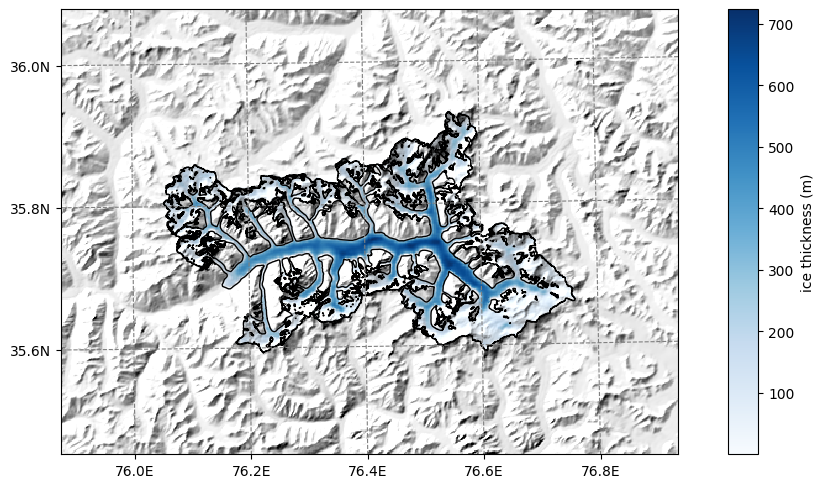
OGGM-Shop: velocities#
We download data from Millan 2022 (see the shop).
If you want more velocity products, feel free to open a new topic on the OGGM issue tracker!
this will download several large datasets depending on your connection, it might take some time …
# attention downloads data!!!
from oggm.shop import millan22
workflow.execute_entity_task(millan22.millan_velocity_to_gdir, gdirs);
2026-03-09 23:16:14: oggm.workflow: Execute entity tasks [millan_velocity_to_gdir] on 1 glaciers
By applying the entity task velocity to gdir OGGM downloads and reprojects the ITS_live files to a given glacier map.
The velocity components (vx, vy) are added to the gridded_data nc file.
Now we can read in all the gridded data that comes with OGGM, including the velocity components.
with xr.open_dataset(gdir.get_filepath('gridded_data')) as ds:
ds = ds.load()
ds
<xarray.Dataset> Size: 5MB
Dimensions: (y: 348, x: 481)
Coordinates:
* y (y) float32 1kB 3.993e+06 3.993e+06 ... 3.924e+06
* x (x) float32 2kB 5.793e+05 5.795e+05 ... 6.753e+05
Data variables:
topo (y, x) float32 670kB 4.863e+03 ... 5.384e+03
topo_smoothed (y, x) float32 670kB 4.869e+03 ... 5.386e+03
topo_valid_mask (y, x) int8 167kB 1 1 1 1 1 1 1 1 ... 1 1 1 1 1 1 1
glacier_mask (y, x) int8 167kB 0 0 0 0 0 0 0 0 ... 0 0 0 0 0 0 0
glacier_ext (y, x) int8 167kB 0 0 0 0 0 0 0 0 ... 0 0 0 0 0 0 0
consensus_ice_thickness (y, x) float32 670kB nan nan nan ... nan nan nan
millan_v (y, x) float32 670kB 31.63 26.12 ... 13.64 30.27
millan_vx (y, x) float32 670kB -27.62 -24.48 ... 4.112 15.05
millan_vy (y, x) float32 670kB 15.4 9.107 ... 13.01 26.26
Attributes:
author: OGGM
author_info: Open Global Glacier Model
pyproj_srs: +proj=utm +zone=43 +datum=WGS84 +units=m +no_defs
max_h_dem: 8528.734
min_h_dem: 2992.6685
max_h_glacier: 8528.734
min_h_glacier: 3402.391# plot the salem map background, make countries in grey
smap = ds.salem.get_map(countries=False)
smap.set_shapefile(gdir.read_shapefile('outlines'))
smap.set_topography(ds.topo.data);
ds
<xarray.Dataset> Size: 5MB
Dimensions: (y: 348, x: 481)
Coordinates:
* y (y) float32 1kB 3.993e+06 3.993e+06 ... 3.924e+06
* x (x) float32 2kB 5.793e+05 5.795e+05 ... 6.753e+05
Data variables:
topo (y, x) float32 670kB 4.863e+03 ... 5.384e+03
topo_smoothed (y, x) float32 670kB 4.869e+03 ... 5.386e+03
topo_valid_mask (y, x) int8 167kB 1 1 1 1 1 1 1 1 ... 1 1 1 1 1 1 1
glacier_mask (y, x) int8 167kB 0 0 0 0 0 0 0 0 ... 0 0 0 0 0 0 0
glacier_ext (y, x) int8 167kB 0 0 0 0 0 0 0 0 ... 0 0 0 0 0 0 0
consensus_ice_thickness (y, x) float32 670kB nan nan nan ... nan nan nan
millan_v (y, x) float32 670kB 31.63 26.12 ... 13.64 30.27
millan_vx (y, x) float32 670kB -27.62 -24.48 ... 4.112 15.05
millan_vy (y, x) float32 670kB 15.4 9.107 ... 13.01 26.26
Attributes:
author: OGGM
author_info: Open Global Glacier Model
pyproj_srs: +proj=utm +zone=43 +datum=WGS84 +units=m +no_defs
max_h_dem: 8528.734
min_h_dem: 2992.6685
max_h_glacier: 8528.734
min_h_glacier: 3402.391# get the velocity data
u = ds.millan_vx.where(ds.glacier_mask)
v = ds.millan_vy.where(ds.glacier_mask)
ws = (u**2 + v**2)**0.5
The .where(ds.glacier_mask) command will remove the data outside of the glacier outline.
# get the axes ready
f, ax = plt.subplots(figsize=(12, 12))
# Quiver only every 3rd grid point
us = u[1::5, 1::5]
vs = v[1::5, 1::5]
smap.set_data(ws)
smap.set_cmap('Blues')
smap.plot(ax=ax)
smap.append_colorbar(ax=ax, label = 'ice velocity (m yr$^{-1}$)')
# transform their coordinates to the map reference system and plot the arrows
xx, yy = smap.grid.transform(us.x.values, us.y.values, crs=gdir.grid.proj)
xx, yy = np.meshgrid(xx, yy)
qu = ax.quiver(xx, yy, us.values, vs.values)
qk = ax.quiverkey(qu, 0.82, 0.97, 200, '200 m yr$^{-1}$',
labelpos='E', coordinates='axes')
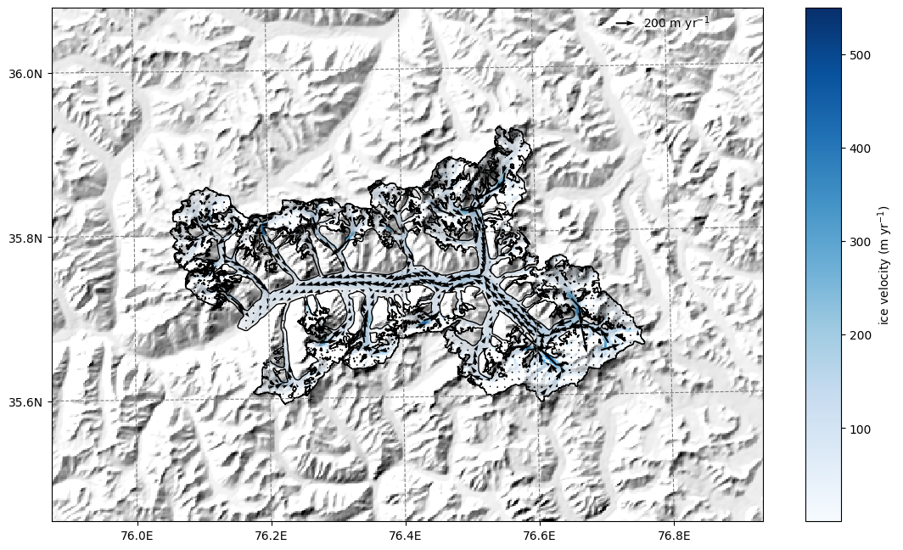
Bin the data in gridded_data into OGGM elevation bands#
Now that we have added new data to the gridded_data file, we can bin the data sets into the same elevation bands as OGGM by recomputing the elevation bands flowlines:
tasks.elevation_band_flowline(gdir,
bin_variables=['consensus_ice_thickness',
'millan_vx',
'millan_vy'],
preserve_totals=[True, False, False] # I am actually not sure if preserving totals is meaningful with velocities - likely not
# NOTE: we could bin variables according to max() as well!
)
This created a csv in the glacier directory folder with the data binned to it:
import pandas as pd
df = pd.read_csv(gdir.get_filepath('elevation_band_flowline'), index_col=0)
df
| area | mean_elevation | slope | consensus_ice_thickness | millan_vx | millan_vy | bin_elevation | dx | width | |
|---|---|---|---|---|---|---|---|---|---|
| dis_along_flowline | |||||||||
| 43.933668 | 80000.0 | 8451.994141 | 0.329014 | 16.689759 | 3.915020 | -0.037333 | 8445.0 | 87.867337 | 910.463465 |
| 106.082812 | 40000.0 | 8356.064453 | 0.688892 | 13.260039 | NaN | NaN | 8355.0 | 36.430950 | 1097.967539 |
| 144.954563 | 40000.0 | 8328.225586 | 0.628076 | 25.735913 | 6.885954 | -6.464122 | 8325.0 | 41.312554 | 968.228692 |
| 184.542152 | 40000.0 | 8255.249023 | 0.670052 | 20.068361 | -2.029810 | -8.173100 | 8265.0 | 37.862623 | 1056.450856 |
| 218.570716 | 40000.0 | 8228.778320 | 0.782167 | 15.606180 | NaN | NaN | 8235.0 | 30.194506 | 1324.744295 |
| ... | ... | ... | ... | ... | ... | ... | ... | ... | ... |
| 42406.102871 | 720000.0 | 3524.266276 | 0.089263 | 151.745630 | -4.371870 | -6.710640 | 3525.0 | 335.191062 | 2148.028635 |
| 42713.499334 | 520000.0 | 3496.510254 | 0.106887 | 118.709123 | -2.407860 | -3.983522 | 3495.0 | 279.601863 | 1859.787320 |
| 42954.225481 | 240000.0 | 3463.939290 | 0.147545 | 84.830388 | -3.938826 | -5.901700 | 3465.0 | 201.850432 | 1188.999192 |
| 43156.267394 | 160000.0 | 3433.763977 | 0.147269 | 66.635027 | -3.768615 | -4.038297 | 3435.0 | 202.233396 | 791.165077 |
| 43398.326619 | 80000.0 | 3406.777466 | 0.106027 | 44.567799 | 0.926798 | -5.066641 | 3405.0 | 281.885053 | 283.803626 |
163 rows × 9 columns
df['obs_velocity'] = (df['millan_vx']**2 + df['millan_vy']**2)**0.5
df['bed_h'] = df['mean_elevation'] - df['consensus_ice_thickness']
df[['mean_elevation', 'bed_h', 'obs_velocity']].plot(figsize=(10, 4), secondary_y='obs_velocity');
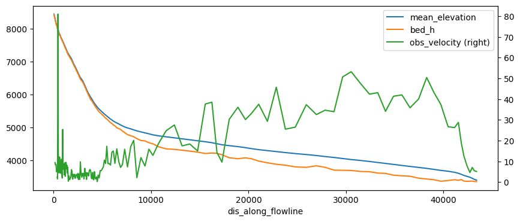
The problem with this file is that it does not have a regular spacing. The numerical model needs regular spacing, which is why OGGM does this:
# This takes the csv file and prepares new 'inversion_flowlines.pkl' and created a new csv file with regular spacing
tasks.fixed_dx_elevation_band_flowline(gdir,
bin_variables=['consensus_ice_thickness',
'millan_vx',
'millan_vy'],
preserve_totals=[True, False, False]
)
df_regular = pd.read_csv(gdir.get_filepath('elevation_band_flowline', filesuffix='_fixed_dx'), index_col=0)
df_regular
| widths_m | area_m2 | consensus_ice_thickness | millan_vx | millan_vy | |
|---|---|---|---|---|---|
| 0.0 | 1183.774470 | 4.735098e+05 | 17.899715 | NaN | NaN |
| 400.0 | 1284.705712 | 5.138823e+05 | 28.611922 | 5.816379 | -8.397247 |
| 800.0 | 7371.446073 | 2.948578e+06 | 24.329906 | -1.111203 | -3.556778 |
| 1200.0 | 21381.382684 | 8.552553e+06 | 29.178327 | -1.764506 | -3.563289 |
| 1600.0 | 26176.152700 | 1.047046e+07 | 41.668008 | -0.411092 | 1.359154 |
| ... | ... | ... | ... | ... | ... |
| 41200.0 | 2113.952677 | 8.455811e+05 | 215.858730 | -6.129232 | -27.260295 |
| 41600.0 | 2104.860747 | 8.419443e+05 | 162.028592 | -9.644002 | -17.293821 |
| 42000.0 | 2002.674052 | 8.010696e+05 | 163.862474 | -6.437616 | -9.035763 |
| 42400.0 | 1975.305479 | 7.901222e+05 | 129.879310 | -3.133028 | -4.990450 |
| 42800.0 | 1103.947056 | 4.415788e+05 | 80.074380 | -3.900263 | -5.479528 |
108 rows × 5 columns
The other variables have disappeared for saving space, but I think it would be nicer to have them here as well. We can grab them from the inversion flowlines (this could be better handled in OGGM):
fl = gdir.read_pickle('inversion_flowlines')[0]
df_regular['mean_elevation'] = fl.surface_h
df_regular['obs_velocity'] = (df_regular['millan_vx']**2 + df_regular['millan_vy']**2)**0.5
df_regular['consensus_bed_h'] = df_regular['mean_elevation'] - df_regular['consensus_ice_thickness']
df_regular[['mean_elevation', 'consensus_bed_h', 'obs_velocity']].plot(figsize=(10, 4),
secondary_y='obs_velocity');
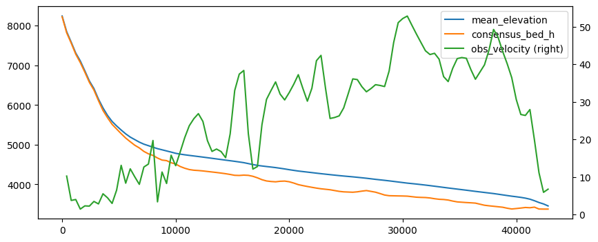
OK so more or less the same but this time on a regular grid. Note that these now have the same length as the OGGM inversion flowlines, i.e. one can do stuff such as comparing what OGGM has done for the inversion:
inv = gdir.read_pickle('inversion_output')[0]
df_regular['OGGM_bed'] = df_regular['mean_elevation'] - inv['thick']
df_regular[['mean_elevation', 'consensus_bed_h', 'OGGM_bed']].plot();
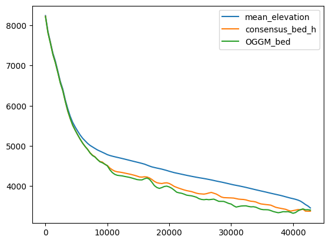
Compare velocities: at inversion#
OGGM already inverted the ice thickness based on some optimisation such as matching the regional totals. Which parameters did we use?
d = gdir.get_diagnostics()
d
{'dem_source': 'COPDEM90',
'flowline_type': 'elevation_band',
'apparent_mb_from_any_mb_residual': 56.100000000000634,
'inversion_glen_a': 6.112249005713362e-24,
'inversion_fs': 0}
# OK set them so that we are consistent
cfg.PARAMS['inversion_glen_a'] = d['inversion_glen_a']
cfg.PARAMS['inversion_fs'] = d['inversion_fs']
2026-03-09 23:18:55: oggm.cfg: PARAMS['inversion_glen_a'] changed from `2.4e-24` to `6.112249005713362e-24`.
# Since we overwrote the inversion flowlines we have to do stuff again
tasks.mb_calibration_from_geodetic_mb(gdir,
informed_threestep=True,
overwrite_gdir=True)
tasks.apparent_mb_from_any_mb(gdir)
tasks.prepare_for_inversion(gdir)
tasks.mass_conservation_inversion(gdir)
tasks.compute_inversion_velocities(gdir)
inv = gdir.read_pickle('inversion_output')[0]
df_regular['OGGM_inversion_velocity'] = inv['u_surface']
df_regular[['obs_velocity', 'OGGM_inversion_velocity']].plot();
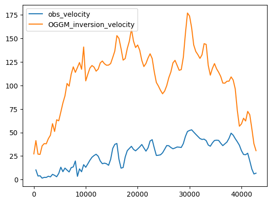
The velocities are higher, because:
OGGM is at equilibrium
the comparison between the bulk velocities of OGGM and the gridded observed ones is not straightforward.
Velocities during the run#
TODO: here we could use velocities from the spinup run!!
Inversion velocities are for a glacier at equilibrium - this is not always meaningful. Let’s do a run and store the velocities with time:
cfg.PARAMS['store_fl_diagnostics'] = True
2026-03-09 23:18:56: oggm.cfg: PARAMS['store_fl_diagnostics'] changed from `False` to `True`.
tasks.run_from_climate_data(gdir);
with xr.open_dataset(gdir.get_filepath('model_diagnostics')) as ds_diag:
ds_diag = ds_diag.load()
ds_diag.volume_m3.plot();
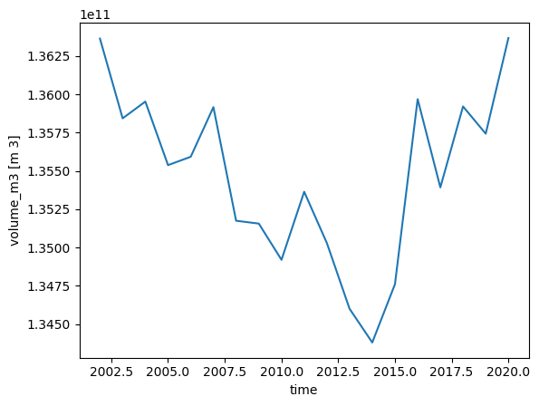
with xr.open_dataset(gdir.get_filepath('fl_diagnostics'), group='fl_0') as ds_fl:
ds_fl = ds_fl.load()
ds_fl
<xarray.Dataset> Size: 253kB
Dimensions: (dis_along_flowline: 180, time: 19)
Coordinates:
* dis_along_flowline (dis_along_flowline) float64 1kB 0.0 400.0 ... 7.16e+04
* time (time) float64 152B 2.002e+03 2.003e+03 ... 2.02e+03
calendar_year (time) int64 152B 2002 2003 2004 2005 ... 2018 2019 2020
calendar_month (time) int64 152B 1 1 1 1 1 1 1 1 1 1 1 1 1 1 1 1 1 1 1
hydro_year (time) int64 152B 2002 2003 2004 2005 ... 2018 2019 2020
hydro_month (time) int64 152B 4 4 4 4 4 4 4 4 4 4 4 4 4 4 4 4 4 4 4
Data variables: (12/13)
point_lons (dis_along_flowline) float64 1kB 75.88 75.88 ... 76.68
point_lats (dis_along_flowline) float64 1kB 36.08 36.08 ... 36.07
bed_h (dis_along_flowline) float64 1kB 8.218e+03 ... 3.011e+03
volume_m3 (time, dis_along_flowline) float64 27kB 1.187e+07 ......
volume_bsl_m3 (time, dis_along_flowline) float64 27kB 0.0 0.0 ... 0.0
volume_bwl_m3 (time, dis_along_flowline) float64 27kB 0.0 0.0 ... 0.0
... ...
thickness_m (time, dis_along_flowline) float64 27kB 25.63 ... 0.0
ice_velocity_myr (time, dis_along_flowline) float64 27kB nan nan ... 0.0
calving_bucket_m3 (time) float64 152B 0.0 0.0 0.0 0.0 ... 0.0 0.0 0.0 0.0
flux_divergence (time, dis_along_flowline) float64 27kB nan nan ... 0.0
climatic_mb (time, dis_along_flowline) float64 27kB nan nan ... 0.0
dhdt (time, dis_along_flowline) float64 27kB nan nan ... 0.0
Attributes:
calendar: 365-day no leap
water_level: 0
dx: 2.0
creation_date: 2026-03-09 23:18:56
fs: 0
mb_model_class: MultipleFlowlineMassBalance
map_dx: 200.0
class: MixedBedFlowline
glen_a: 6.112249005713362e-24
oggm_version: 1.6.3.dev47+g61a0dd492
mb_model_hemisphere: nh
description: OGGM model outputds_fl.sel(time=[2003, 2010, 2020]).ice_velocity_myr.plot(hue='time');
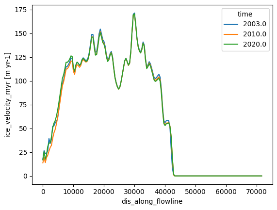
# The OGGM model flowlines also have the downstream lines
df_regular['OGGM_velocity_run_begin'] = ds_fl.sel(time=2003).ice_velocity_myr.data[:len(df_regular)]
df_regular['OGGM_velocity_run_end'] = ds_fl.sel(time=2020).ice_velocity_myr.data[:len(df_regular)]
df_regular[['obs_velocity', 'OGGM_inversion_velocity',
'OGGM_velocity_run_begin', 'OGGM_velocity_run_end']].plot();
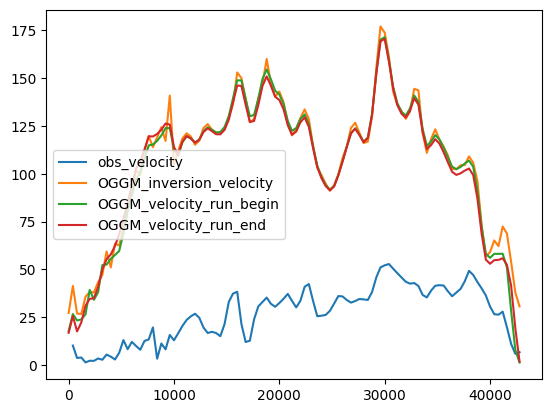
What’s next?#
return to the OGGM documentation
back to the table of contents